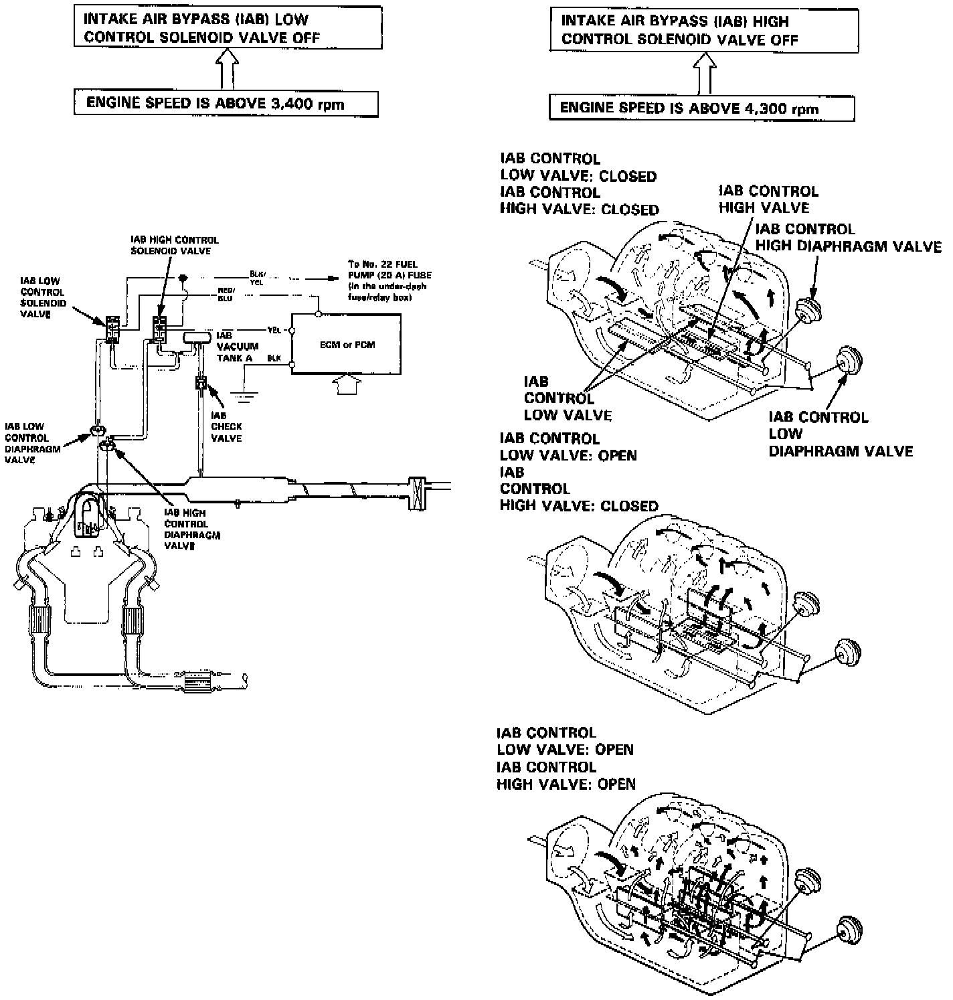

Variable Induction System: Description and Operation

PURPOSE
The Intake Air Bypass (IAB) control system improves the torque output at lower RPM, and horsepower output at high RPM.
OPERATION
The Engine Control Module (ECM) turns the IAB control solenoids (high and low) on at lower RPM, applying vacuum to high and low diaphragms which move butterfly valves within the IAB valve body. As the RPM rises, first the low solenoid and then the high solenoid have their grounds removed which cuts vacuum to the diaphragms, opening the butterflies. This affects the flow of air through the intake manifold, changing its effective length for best performance.
CONSTRUCTION
The two solenoids are electromagnetic valves. The three butterfly valves are connected by linkage to the two diaphragms. The butterfly valves are contained within the IAB valve body.